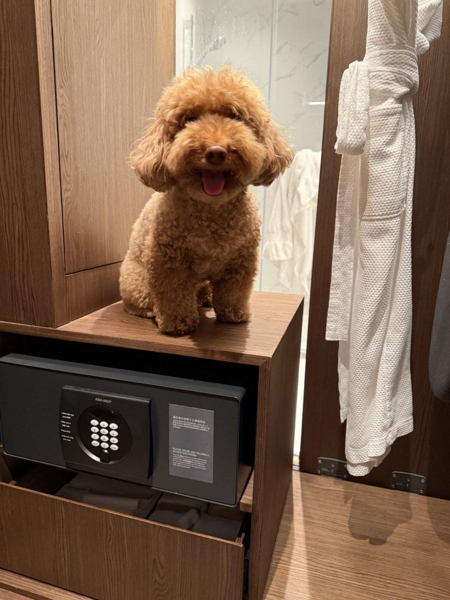

Kyle the Dog Greets You!
In which Kyle says hi.
Apr 6, 2026
"Oh hey there friend! Welcome to my page.
In here, you'll find me talking about eggs, sweet potatoes, and long walks near the harbour front.
We'll also talk about the meaning of unconditional love, like how I unconditionally love the smell of cooked crabs.
Anyway, hope you enjoy my rants! See you back here soon!
- Kyle"
